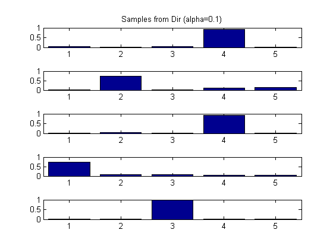
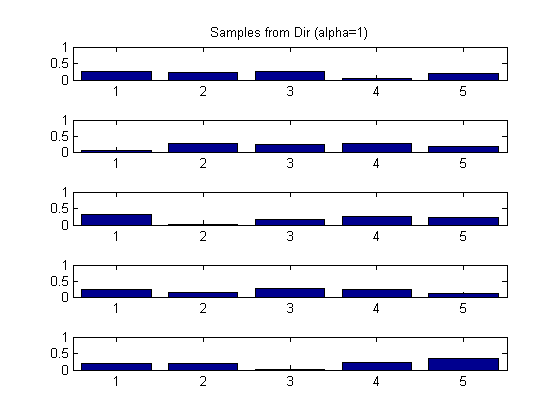

Plot Histogram of Samples Generated From a DirichletDist
alphavec = [0.1, 1.0, 5.0];
alphavecstr = {'01', '1', '5'};
K = 5;
nsamples = 10;
setSeed(0);
for j=1:length(alphavec)
model.alpha = repmat(alphavec(j), K, 1);
S = dirichletSample(model, nsamples);
figure();
for i=1:K
subplot(K, 1, i);
bar(S(i, :))
if i==1
title(sprintf('Samples from Dir (alpha=%g)', alphavec(j)));
end
set(gca, 'ylim', [0 1]);
end
printPmtkFigure(sprintf('dir%s', alphavecstr{j}));
end
 